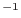
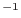

1. Simultaneous detection run on the 5 standard energy bands of the MOS1 detector:
edetect_chain imagesets=''M1IMAGE_1000.FIT M1IMAGE_2000.FIT M1IMAGE_3000.FIT
M1IMAGE_4000.FIT M1IMAGE_5000.FIT'' \
eventsets=M1EVLI.FIT \
attitudeset=atthk.dat \
pimin=''200 500 1000 2000 4500'' \
pimax=''500 1000 2000 4500 12000'' \
ecf=''1.8118 1.8837 0.75057 0.15077 1.42326''
Note: Here we use energy conversion factors for the thin filter (see the
2XMM and 3XMM documentations at
http://xmmssc-www.star.le.ac.uk/Catalogue/2XMM/UserGuide_xmmcat.html#EmldetFit
,
http://xmmssc-www.star.le.ac.uk/Catalogue/3XMM-DR4/UserGuide_xmmcat.html#ProblECFs
;
in particular
http://xmmssc-www.star.le.ac.uk/Catalogue/3XMM-DR4/UserGuide_xmmcat.html#TabECFs
for other ecf values).
The default value of the ecf parameter is 1.0 (in units of counts
cm erg),
using the default value will lead to incorrect values in the FLUX columns
of the eboxdetect
and emldetect
output source lists.
erg),
using the default value will lead to incorrect values in the FLUX columns
of the eboxdetect
and emldetect
output source lists.
2. Simultaneous detection run on energy bands 2 and 3 and all EPIC detectors, use event set PNEVLI.FIT to calculate background due to out-of-time events:
edetect_chain imagesets=''M1IMAGE_2000.FIT M1IMAGE_3000.FIT
M2IMAGE_2000.FIT M2IMAGE_3000.FIT
PNIMAGE_2000.FIT PNIMAGE_3000.FIT''
eventsets=''M1EVLI.FIT M2EVLI.FIT PNEVLI.FIT'' \
attitudeset=atthk.dat \
pimin=''500 2000 500 2000 500 2000'' \
pimax=''2000 4500 2000 4500 2000 4500'' \
esp_withootset=yes \
esp_ooteventset=PNEVLI.FIT
Note: The calculation of the background due to out-of-time events is only used for EPIC PN data, the events set given in esp_ooteventset has to be an EPIC PN event list and should have the same TIME and FLAG selections as the EPIC PN input images.
3. Simultaneous detection run on PN images 2 and 3, using emldetect to determine the extent of the sources:
edetect_chain imagesets=''PNIMAGE_2000.FIT PNIMAGE_3000.FIT''
eventsets=PNEVLI.FIT \
attitudeset=atthk.dat \
eml_fitextent=yes \
pimin=''500 2000'' \
pimax=''2000 4500'' \
esp_nsplinenodes=12 \
eml_fitextent=yes \
eml_ecut=15.
Note: The parameter eml_ecut determines the cutout radius of the sub-image used for the ML fit. The image cut-out radius eml_ecut is given in pixels.
4. Simultaneous detection run on 15 input images. Use a 2 component model for background fitting. This model is a linear combination of the exposure map and the unvignetted exposure map. Set emldetect to fit the extent of each source and allow 2-PSF fitting. In order to save computing time, select the 'two stage' option: only if a source is detected as extended in a first fit, 2-PSF fitting is applied. Also a threshold of LIKE is set, only for these sources 2-PSF fitting is used.
edetect_chain imagesets='' PNIMAGE_1000.FIT PNIMAGE_2000.FIT PNIMAGE_3000.FIT PNIMAGE_4000.FIT PNIMAGE_5000.FIT
M1IMAGE_1000.FIT M1IMAGE_2000.FIT M1IMAGE_3000.FIT M1IMAGE_4000.FIT M1IMAGE_5000.FIT
M2IMAGE_1000.FIT M2IMAGE_2000.FIT M2IMAGE_3000.FIT M2IMAGE_4000.FIT M2IMAGE_5000.FIT''
eventsets=''M1EVLI.FIT M2EVLI.FIT PNEVLI.FIT'' \
attitudeset=atthk.dat \
pimin=''200 500 1000 2000 4500 200 500 1000 2000 4500 200 500 1000 2000 4500'' \
pimax=''500 1000 2000 4500 12000 500 1000 2000 4500 12000 500 1000 2000 4500 12000'' \
esp_withootset=yes \
esp_ooteventset=PNEVLI.FIT \
esp_fitmethod=''model'' \
eml_fitextent=yes \
eml_nmulsou=2 \
eml_withtwostage=yes \
eml_withthreshold=yes \
eml_threshold=30